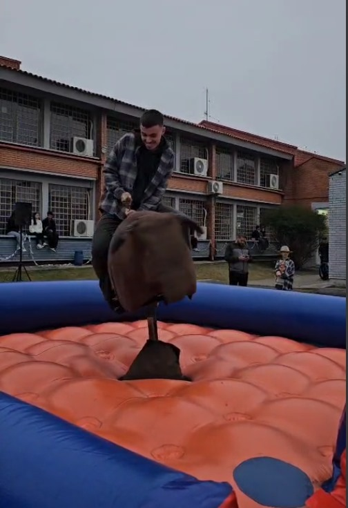

El 12 de julio —sí, ¡en julio!— tuvimos en la ETEP una fiesta junina que fue todo un acontecimiento. Hubo música en vivo,
juegos para todos los gustos y, sobre todo, mucha gente feliz disfrutando de una tradición que parecía haberse apagado con los años.
Para quienes conocieron la escuela en épocas pasadas, las fiestas juninas eran una de sus marcas registradas. Sin embargo, esa magia se
fue perdiendo poco a poco, víctima de decisiones demasiado conservadoras de antiguas gestiones escolares. Por suerte,
con la nueva administración, estos eventos volvieron a ser posibles, y la comunidad entera lo agradeció.
intersección
La fiesta no fue solamente para los alumnos: llegaron personas de otras escuelas, se mezclaron las risas y las conversaciones, y los puestos de los
formandos hicieron caja gracias a la gran cantidad de visitantes. La atmósfera era tan alegre que uno podía sentir el espíritu festivo en cada rincón:
olor a comidas típicas, la gente bailando, los grupos sacando fotos, las familias que vinieron a acompañar. Fue, sin exagerar, un verdadero reencuentro con
nuestras raíces culturales.
Eso sí, ni todo fue perfecto: la famosa “cárcel” de la fiesta, donde uno podía pagar para encerrar a un amigo por diversión, no cumplió su
función más romántica… ningún nuevo romance nació allí. La mayoría solo entró en la broma por la risa de pasar una hora sin poder disfrutar del evento,
todo por apenas diez reales.
"¡No me gusta a "Gremio", soy colorado!
En mi caso, además de divertirme, aproveché la ocasión para hacer algo importante: divulgar la chapa del gremio estudiantil de la cual formo parte. Estábamos a pocos días de las elecciones y todavía había gente que ni siquiera sabía que se estaba formando un nuevo gremio. Tener la oportunidad de hablar con tantas personas de manera tan directa, en un ambiente relajado, fue una experiencia increíble.
En resumen, la fiesta fue un éxito en todos los sentidos: recuperamos una tradición perdida, fortalecimos la vida escolar y, lo más importante, volvimos a creer que estos espacios de encuentro sí pueden existir en nuestra institución. Ojalá esta sea solo la primera de muchas más. ¡Que vengan nuevas fiestas y que la magia nunca más se apague!
